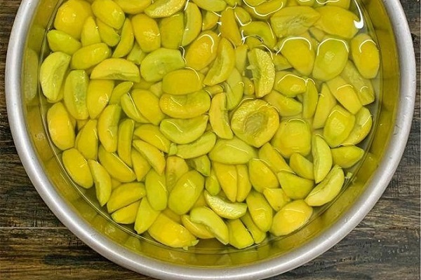
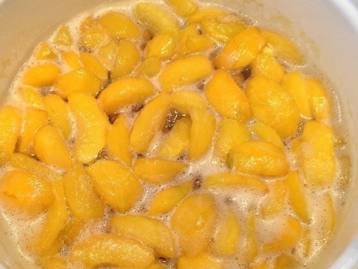
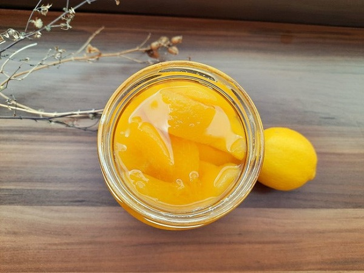

Mặc dù đào ngâm đóng hộp có thể mua sẵn nhưng nếu thích vị giòn sần sật của đào tươi, bạn hoàn toàn có thể tự làm đào ngâm một cách dễ dàng tại nhà. Cách pha chế trà đào sẽ trở nên dễ dàng hơn hẳn khi bạn làm được đào ngâm.
Nguyên liệu
Đào tươi: 1kg
Đường vàng: 500g
Chanh tươi: 1 quả
Muối: 50g
Đá viên
Cách làm trà đào
Bước 1: Đào chọn quả có màu vàng hồng, còn cứng không quá chín hoặc không quá xanh. Ngâm đào trong nước muối 15 phút rồi rửa sạch 2-3 lần nước, vớt ra, để ráo.
Bước 2: Chuẩn bị một thau nước có pha chút muối. Dùng dao sắc, khéo léo tách đào thành từng múi như tách múi cóc rồi gọt sạch vỏ. Tách đào đến đâu bạn cho ngay vào thau nước đến đó để đào không bị thâm.
Bước 3: Đào sau khi tách xong bạn vớt ra rổ để cho ráo nước. Sau đó, cho đào vào ngâm với 250g đường và trộn đều, bọc kín để tủ lạnh qua đêm.
Bước 4: Bắc nồi lên bếp, cho 250g đường còn lại vào nồi cùng với 20ml nước, thắng đường cho lên màu, trong quá trình đợi đường lên màu không được khuấy vì sẽ dễ khiến đường bị vón cục.
Khi đường chuyển qua màu vàng đậm, nhanh tay đổ 600ml nước vào và khuấy cho tan đường bị keo trong nồi. Sau khi đường tan hết và nước sôi lại thì cho đào đã ướp đường vào nấu khoảng 5 phút đến khi miếng đào trong thì tắt bếp.
Bước 5: Chuẩn bị 1 thau nước đá lạnh. Vớt đào ra cho vào thau nước đá để đào giữ được độ giòn ngon. Với phần nước đường, bạn đợi nguội rồi thêm vào nước cốt 1 quả chanh cho có vị ngọt thanh, dùng muỗng khuấy đều.
Bình hoặc hũ thủy tinh có nắp đậy tiệt trùng qua nước sôi, để khô ráo mới cho đào và nước đường vào. Đậy nắp và bảo quản đào trong ngăn mát tủ lạnh.

Hy vọng với cách làm trà đào đơn giản trên đây sẽ là bí kíp bỏ túi cho món trà đào ngon hảo hạng. Nếu kinh doanh, bạn có thể áp dụng một số biến tấu độc đáo khác như cách làm trà đào dầm, cách pha trà đào tắc, cách pha trà đào Cozy để thu hút nhiều khách hàng và gia tăng lợi nhuận quán.